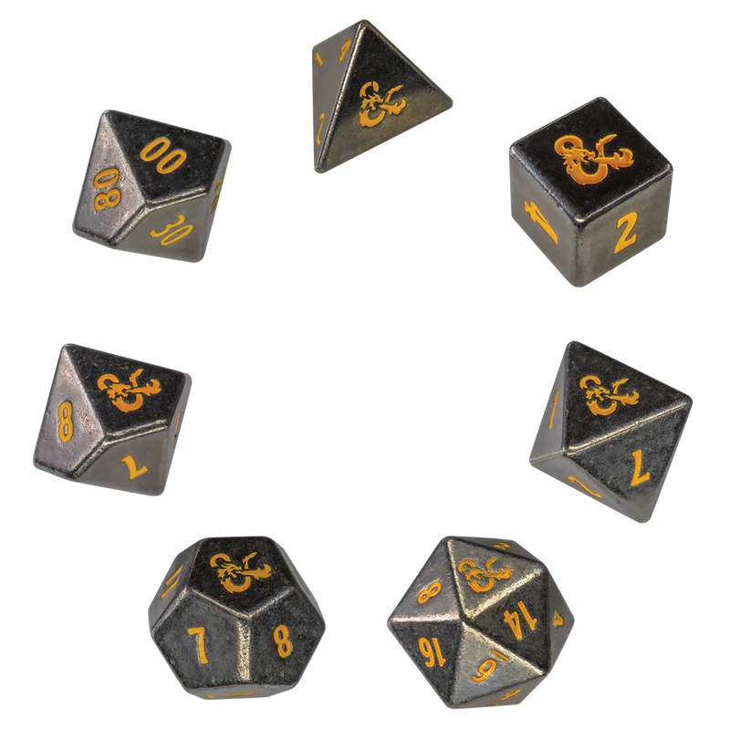
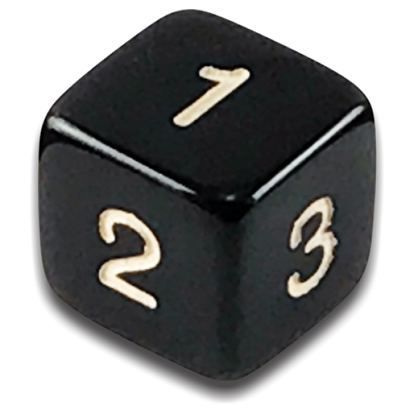
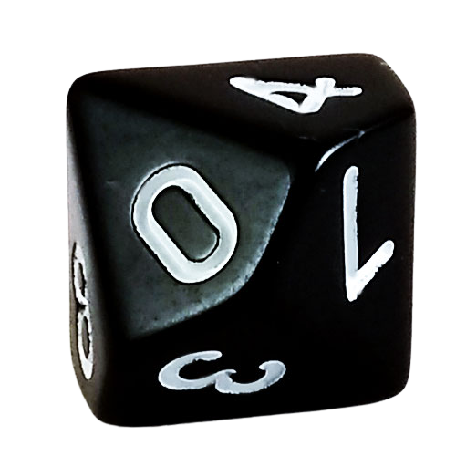
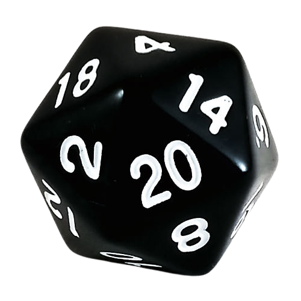

São ferramentas essenciais para determinar resultados e acrescentar uma dose de imprevisibilidade às narrativas. O dado mais comum é o icônico d20 (dado de 20 lados), frequentemente associado a sistemas como Dungeons & Dragons, onde é usado para determinar o sucesso em diversas ações.
d4 (Dado de 4 Lados): O d4, com sua forma piramidal, evoca o tetraedro, um dos sólidos de Platão. Cada face triangular do d4 reflete a simplicidade geométrica, sendo frequentemente usado em jogos de RPG para representar pequenas quantidades de dano ou outros eventos simples.
d6 (Dado de 6 Lados): O d6, o cubo familiar, se alinha com o hexaedro, ou cubo, dos sólidos de Platão. Sua regularidade faz dele um dado comum em jogos de tabuleiro e RPGs, onde é utilizado para várias finalidades, desde determinar danos até resolver testes de habilidade.
d8 (Dado de 8 Lados): O d8 compartilha uma semelhança com a octaedro, um dos sólidos de Platão com oito faces triangulares. Em RPGs, o d8 é frequentemente escolhido para calcular danos médios ou determinar resultados em uma variedade de situações.
d10 (Dado de 10 Lados): O d10, usado para gerar porcentagens ou calcular danos em dezenas, é análogo ao pentagonal trapezoedro, um sólido de Platão com dez faces. Às vezes, dois d10 são usados em conjunto para criar um d100, expandindo sua versatilidade.
d12 (Dado de 12 Lados): O d12, com sua forma dodecaédrica, tem semelhanças com o dodecaedro, outro sólido de Platão. Sua aplicação comum é calcular danos consideráveis em combate e, ocasionalmente, para testes de habilidade mais complexos.
d20 (Dado de 20 Lados): O icônico d20, central em muitos sistemas de RPG, é análogo ao icosaedro, um dos sólidos de Platão com 20 faces triangulares. O d20 determina resultados críticos, falhas catastróficas e o sucesso geral em uma ampla variedade de situações, tornando-se um elemento fundamental na narrativa dos jogos de mesa.
